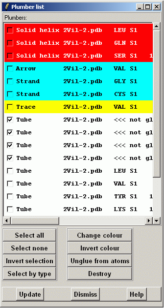

This widget shows lists of existing plumbers.
Plumber type and colour and molecule name are shown. If the plumber is glued to atoms, atom information of the first and the last atom is shown, too.

Select by type will select any plumber which is same type as any of the already selected plumber. In screen-shot situtation all Tubes would be selected.
"Change colour" will open a new colour selection widget from which one can select a new colour for selected plumbers.
"Invert colour" will change colours of the selected plumbers to reversed ones. Clicking it again will restore original colours. So it can be a useful tool to find a particular plumber.
"Unglue from atoms" will break the relation between atom
positions and plumber position.
"Destroy" will remove selected plumber.
"Update" will update the plumber list in case new plumbers are created.